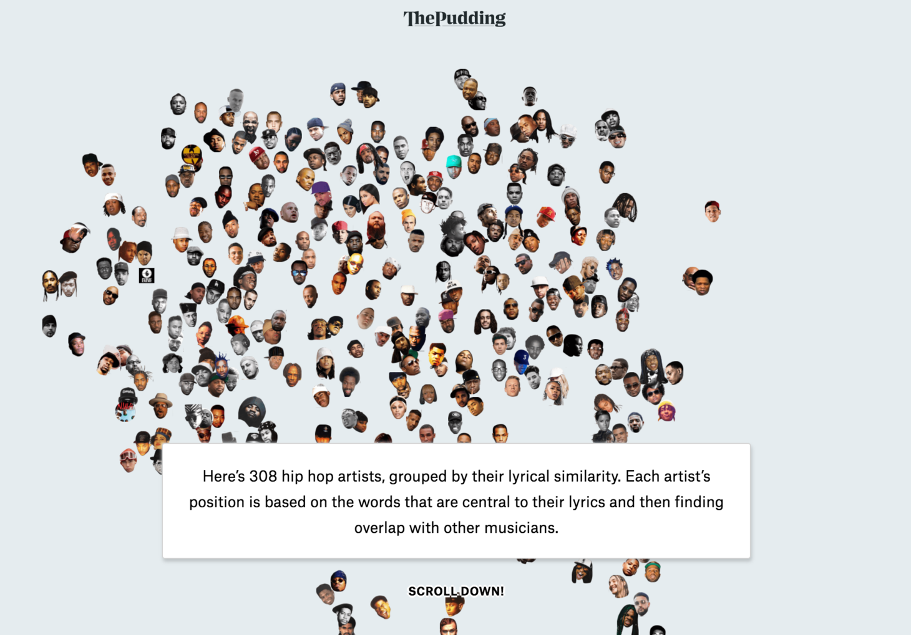

Hello World
CodeTengu Weekly 碼天狗週刊
CodeTengu Weekly 會在 GMT+8 時區的每個禮拜一 AM 10:00 出刊，每期會由三位不同的 curator 負責當期的內容，每個 curator 有各自擅長的領域，如果你在這一期沒有看到自已感興趣的東西，可能下一期就有了。你也可以瀏覽一下前幾期的內容。
目前的 curator 陣容：
- @vinta - I failed the Turing Test - 科幻迷，最近在讀 Ready Player One
- @saiday - Imnotyourson - 徵 Android Developer！救我！
- @tzangms - Oceanic / 人生海海 - 衝動型購物
- @fukuball - ImFukuball - 有新工作了，但歡迎直接挖角
- @mingderwang - Ethereum enthusiast
- @kako0507 - 熱愛嘗試新事物的前端工程師
- @chiahsien - 徵有經驗的 Objective-C 工程師，快來 Twitter 私訊我
- @hiroshiyui - 歧路亡羊與中年危機的典範
- @uranusjr - Smaller Things - 邊緣人拉到 conference 還是邊緣人
- @kkdai - 態度萬歲 - 公司誠徵前端，有想做 5G 與 AI 相關方面的前端歡迎聯絡我
- @yhsiang
- @johnlinvc - 挑戰自動化家中電器
- @drumrick - 歡迎加入台灣 Kaggle 交流區
- @wancw
你也可以關注我們的 Facebook、Twitter、GitHub 或 Open Source 專案，有很多 weekly 看不到的內容。有任何建議也歡迎來 Gitter 聊聊。
 @fukuball
@fukuball
Feature Engineering 相關文章推薦
Machine Learning：中級
台灣 Kaggle 交流區 版主整理了有關 Feature Engineering 的一些文章，目前 Feature Engineering 算是大家比較少討論的一塊，但這一塊應該算是 Machine Learning 中相當重要的一環。
林軒田教授機器學習技法 Machine Learning Techniques 第 13 講學習筆記
Machine Learning：中級
林軒田老師的機器學習技法課程在第 13 講終於講到了 Deep Learning，不過也就僅僅這一章有講到 Deep Learning 了，如果大家想要再深入了解 Deep Learning，那可能要移駕到李宏毅老師的課程了。
Deep Learning 究竟跟一般的神經網路有什麼不同呢？其實簡單來說，Deep Learning 就是一個比較深層的神經網路，而要訓練深層的神經網路運算量會比較大、容易 overfitting，也因此發展了許多深層神經網路特有的處理方法來訓練深層神經網路，Deep Learning 也因為不同網路結構的研究而形成越來越獨特的領域，現在都需要有專門的課程來學習 Deep Learning 了。
Can we beat the state of the art from 2013 with only 0.046% of training examples?
Machine Learning：中級
剛看文章前半部份發現作者只用了 6 張圖片作為訓練資料就可以取得貓狗圖片辨識 89.97% 的準確率，著實嚇了一大跳，畢竟目前的 Machine Learning 演算法要可以 work 都是需要有大量資料，要能夠像人類一樣只用小數據就可以學習並取得高辨識率的演算法目前還在發展中，後來看到是使用 Transfer Learning 就... 覺得作者寫這樣一篇文章有點太大驚小怪了。
Transfer Learning 基本上會用之前已經訓練好的模型（或是其他相似領域的資料）然後再加上自己的小資料去做訓練，所以其實也是經過了大量資料做了訓練，並不是單純只用了 6 張圖片，這個故事告訴我們，要多看點書，不然不小心就會被騙啊！看來小數據機器學習模型目前還是夢啊！

The Language of Hip-Hop
Data Science：中級
一直對音樂相關的資料分析應用蠻著迷的，這個研究分析了 308 位 Hip-Hop 藝人在歌詞寫作上的相似程度，並把這些藝人對應到一個平面，比如國外知名 Hip-Hop 團體 Wu-Tang Clan 的成員們依據歌詞相似程度幾乎都在平面相鄰近的地方，文章還有許多有趣的分析，並用生動的動態圖示呈現出來，蠻值得一看的～
 @uranusjr
@uranusjr
SNAFU: Python Installation Manager for Windows
這一整週的空閑時間都花在這個東西身上，讓我賣個瓜吧。
在 Python 社群混一陣子大概或多或少會聽到大家對 Windows 總是感到頭痛。其實在 Windows 上用 Python 開發並不那麼糟，只是因為它和 Mac 與 Linux（i.e. Unix-like 系統）的設定邏輯相差太多，使得它們上面的 best practice 在 Windows 根本不適用。偏偏 Python 高手通常也很少用 Windows，使得網路上的教學要嘛完全忽視 Windows，要嘛用了從 Unix-like 系統帶來的錯誤邏輯，然後發現 Windows 這樣設定會出一堆狀況，就更排斥 Windows，一直循環讓 Windows 的 best practices 無法廣泛流傳。
最近在整理 Python 環境設定的 best practices，但是寫完 Windows 部分就發現這・太・難・了。重新研究了一番才發現官方其實早就提供了很詳盡的說明，而且解釋了怎麼在 command line 執行安裝程式，於是決定把這些 best practices 自動化。
SNAFU 是一系列 CLI 指令，讓你直接從 Windows command prompt 安裝指定版本的 Python。SNAFU 會自動設定好所有選項，並在同時安裝很多版本時，也能方便管理。從此之後，在 Windows 設定 Python 再也不需要一大篇教學，只需要這樣：
:: 安裝 Python 2.7 和 3.6
snafu install 3.6
snafu install 2.7
:: 執行 Python 3.6
python3.6
:: 執行 Python 2.7
python2.7
更詳細的教學可以看這裡，或者 project 頁的 README。
真心覺得 Windows 使用者值得 Python 社群更多注意捏。拜託別再直接放生用 Windows 的人；推薦他使用這個工具，然後試著 follow 一下 Windows 的哲學，讓 Windows 真的成為 Python 界的 first-class citizen，而不只是說說。
First Pull Request
輸入帳號可以看你在 GitHub 上發過的第一個 pull request 是什麼。偶爾回顧一下黑歷史還滿有趣的。看完如果覺得不夠羞恥，下面還有個連結可以讓你看自己曾經發過的所有 pull requests 呢。
 @yhsiang
@yhsiang
Await and Async Explained with Diagrams and Examples
這篇將 async/ await 介紹得很清楚。從 Promise 講起，並且搭配執行時候的圖。讓你清楚了解 JavaScript Promise 的運作模式，後面再帶到 async / await。
相信很多人都會寫 async / await ，但是背後的原理可以透過這篇，理解的更清楚。
The Ultimate Guide to Flexbox — Learning Through Examples
給了相當多的例子，透過這些例子可以學習到 flexbox 及其相關的 css property。
需要花一點時間耐心地讀完，但是收穫會很多。
5 things CSS developers wish they knew before they started
如果你是 CSS 入門的開發者，可以聽從這五點建議。
- 別低估 CSS
- 分享跟參與
- 選用正確的工具
- 弄懂 Browser
- 學會寫可維護的 CSS
Extend your Graphcool API with Resolvers
graphcool 是一個 graphQL backend as service 的服務。
最近推出了，可以撰寫 custom resolver function 的功能。
對 graphQL 來說 resolver function 是很重要的功能，雖然 graphcool 到最近才提供，相信對使用這個平台的人會有很大幫助，也會吸引更多寫 graphQL 的人去嘗試他們的平台。
Random Cool Stuff
3D Face Reconstruction from a Single Image
之前學過電腦動畫，每次要做立體模型都覺得超麻煩，讓我完全放棄了這個領域，現在或許已經有了許多工具可以來幫助快速建模，但從一張圖片就可以快速建立出對應的立體模型這種魔法我還未曾見過。這個研究目前已經可以快速從一張人臉圖片建立出相對應的立體模型了，屬於二次元世界的 2D 人物直接變 3D 的時代終於要來臨了嗎？
ps. 可以上傳自己的人臉圖片上去看看建出來的立體模型喔！